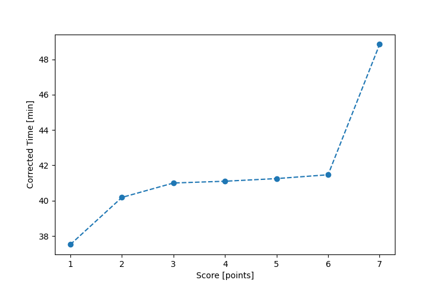

| Wind: | 2-3 (BFT) |
|---|---|
| RC: | Bill_P, Mike_S |
| Date: | August 18, 2019 |
| Notes: | M2 Starboard |
| Rank / Score | Name | Boat | Input Time [mm:ss] | Input Offset [mm:ss] | Race Time [mm:ss] | Race Time [s] | Handicap | Corrected Time [s] | Corrected Time [mm:ss] |
|---|---|---|---|---|---|---|---|---|---|
| 1.0 | Ron_F | F5 | 36:14 | 00:00 | 36:14 | 2174 | 0.96600 | 2251 | 37:31 |
| 2.0 | Mike_F | SF | 40:21 | 00:00 | 40:21 | 2421 | 1.00400 | 2411 | 40:11 |
| 3.0 | Rod_H | LASEM | 39:54 | 00:00 | 39:54 | 2394 | 0.97300 | 2460 | 41:00 |
| 4.0 | John_T | SF | 41:16 | 00:00 | 41:16 | 2476 | 1.00400 | 2466 | 41:06 |
| 5.0 | David_Bu | SF | 41:25 | 00:00 | 41:25 | 2485 | 1.00400 | 2475 | 41:15 |
| 6.0 | Nedra_F | SF | 41:38 | 00:00 | 41:38 | 2498 | 1.00400 | 2488 | 41:28 |
| 7.0 | Ian_O | SF | 49:03 | 00:00 | 49:03 | 2943 | 1.00400 | 2931 | 48:51 |

Application Notes:
All race results are unofficial
View source code at https://github.com/cessnao3/portsmouthracecalc/